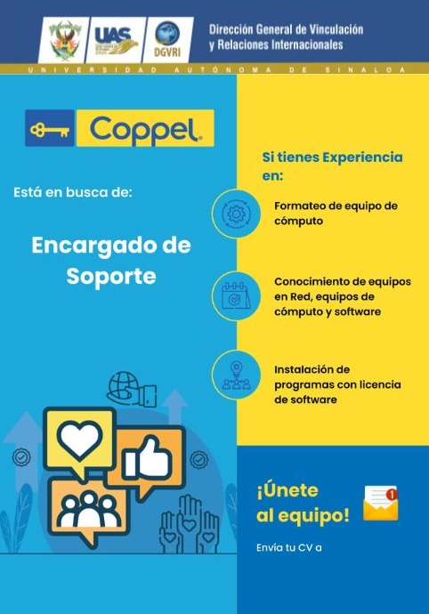
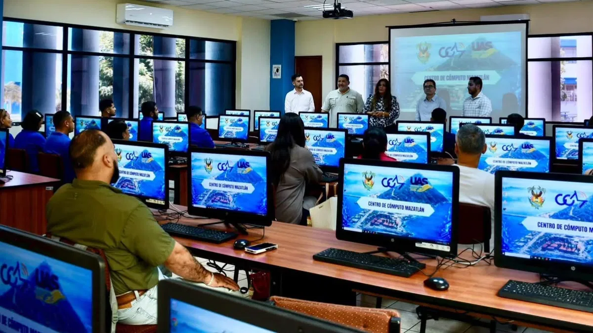
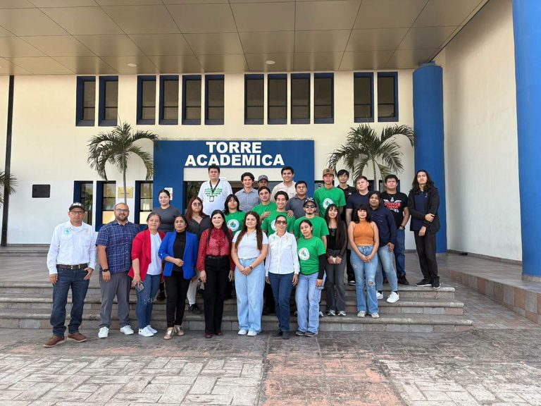

Título principal destacado
Subtítulo o descripción breve de apoyo
Título de la sección
Párrafo informativo principal de la dependencia.
Segundo párrafo de desarrollo.
TÍTULO ELEMENTO 2
TÍTULO ELEMENTO 3
NOTICIAS

Concurso de Programación
Estudiantes de la Facultad de Informática participan en competencias de programación, demostrando sus conocimientos, habilidades y creatividad para resolver problemas.

Taller de Tecnologías Emergentes
La Facultad de Informática promueve espacios de aprendizaje para que los estudiantes conozcan nuevas herramientas y tendencias relacionadas con las tecnologías emergentes.

Vinculación con Empresas
La Universidad Autónoma de Sinaloa fortalece la vinculación laboral de sus estudiantes mediante oportunidades de empleo, como la solicitud de personal de la empresa Coppel.
ACTIVIDADES

Espacio para presentar información sobre las actividades académicas y estudiantiles de la Facultad de Informática.

Participación de los estudiantes en eventos y actividades que contribuyen a su formación profesional.

Actividades realizadas por la comunidad universitaria para fomentar el aprendizaje y la convivencia.